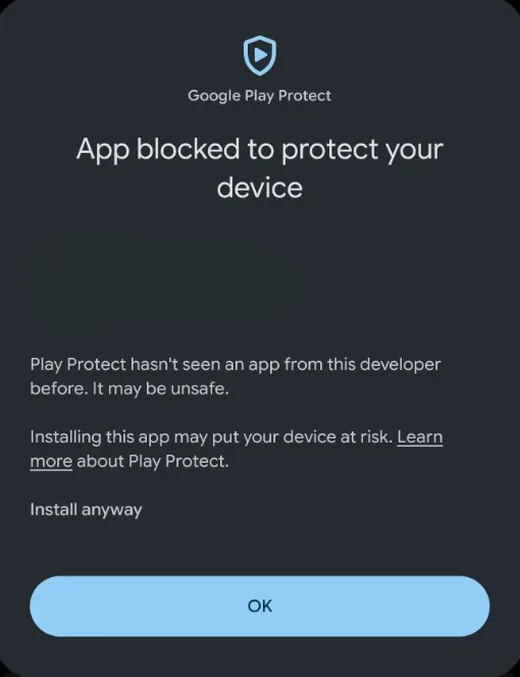
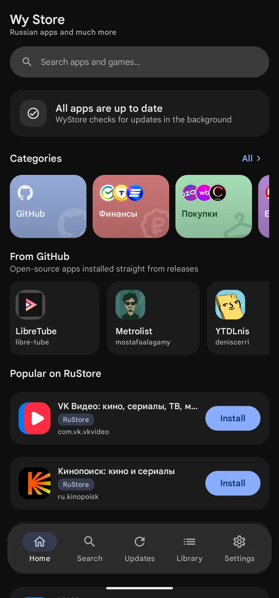
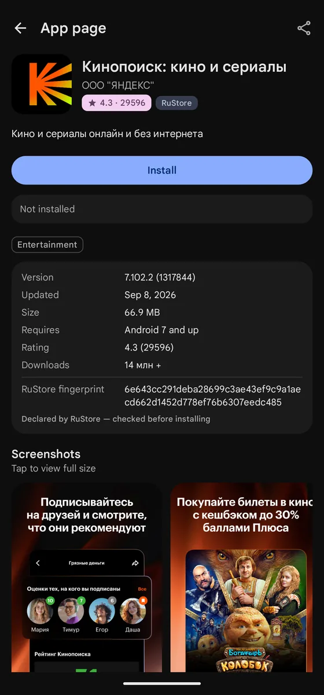
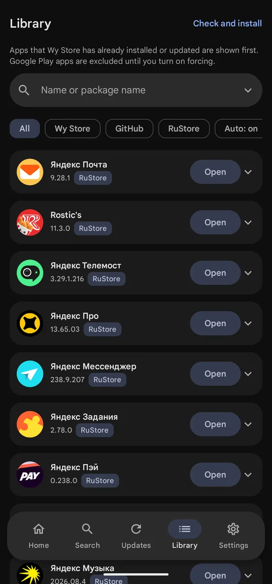

Wy Store
Familiar Russian apps — and nobody watching what you install
The same apps as in RuStore, plus releases from GitHub. Wy Store downloads and installs them itself, through Android's own package installer. No account needed — not with RuStore, not with anyone.
Android 9.0 and newer · about 9 MB · open source, MIT licence
A second source: GitHub
Releases of open-source projects RuStore does not carry — Droid-ify, Neo Store, Syncthing, Ente Photos, Stratum and others — installed straight from their releases, each entry labelled with its source.
Any public repository can be added by URL. The release is picked by rule: nightly tags and releases without a usable APK are skipped. The catalogue itself is aimed at users in Russia, so most of it is in Russian; the interface ships in English too.
The same files as in RuStore
Wy Store installs exactly the apps developers themselves publish to RuStore — unchanged, with nobody in between. The file comes from RuStore's servers, and before installing Wy Store confirms it is the genuine one: the developer's signature and the version match the listing.
The page shows the version, size, required Android, rating and download count, as in RuStore.
Updates in the background
Wy Store checks for updates on a schedule and downloads them itself. What happens next depends on the phone: some Android versions install updates without asking, others ask you to confirm. We try to keep your part as small as possible, but that cannot be promised on every device.
| Android 12 and newer | usually without asking — for apps Wy Store installed |
|---|---|
| Android 9, 10, 11 | the system asks you to confirm, as with any store |
| First install | always confirmed |
| With root | supported: everything installs silently in the background, with no notifications — a settings toggle |
Library
Everything installed, filtered by source: Wy Store, GitHub, RuStore. Apps that Wy Store installed or updated itself come first. Update and uninstall from the same list; “Check and install” does it all in one tap.
Apps from Google Play are left alone until you turn that on for a specific app.
- No account.
- No analytics.
- No ads.
- None of your data.
Wy Store collects nothing about you and sends nothing anywhere. The app talks only to RuStore and GitHub, for the catalogue and the files. Everything else stays on the phone. The full policy.
Install
- Open the downloaded
wystore.apk. - Android asks once for permission to install from this source.
- From then on Wy Store updates itself — it watches the releases in its repository.

Every version of Wy Store is signed with the same developer key, and Android will not let an update replace it with someone else's build. How to verify the signature by hand is in the security notes.
Wy Store is not affiliated with RuStore and does not act on its behalf: RuStore is a data source here. Free apps are supported.


